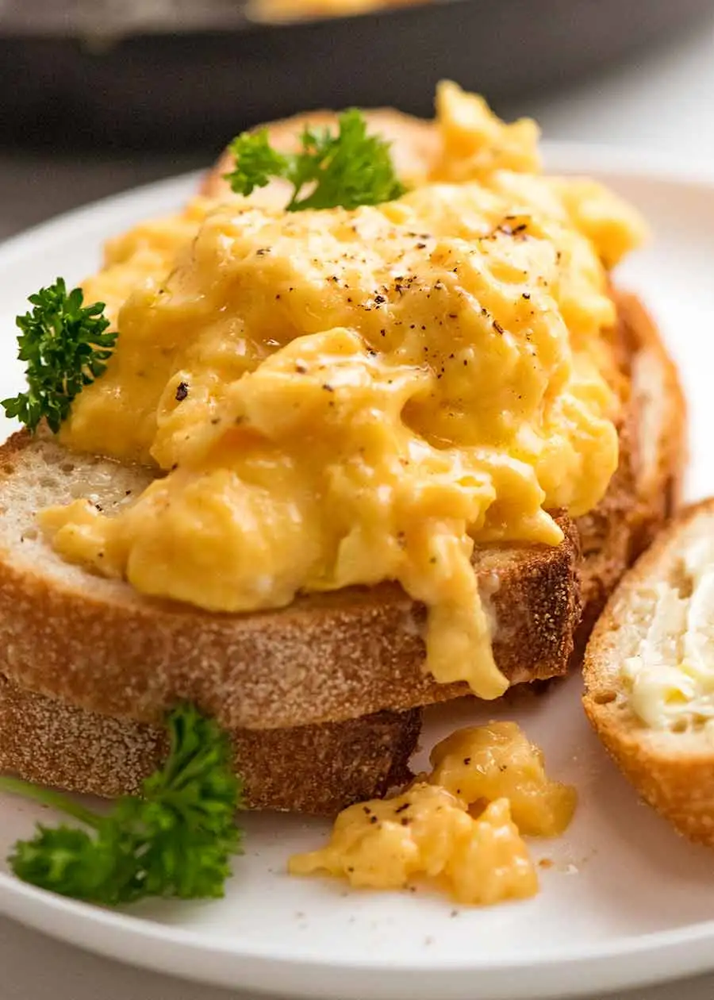

Scrambled eggs

Description
The greatest Scrambled-Egg recipe is sitting right at
your fingertips! Don't wait up, and feast upon this hidden treasure!
Ingredients
- 2 to 3 Eggs (Whole, any other type)
- Creme fraiche
- Salt and Pepper
Steps
- Heat up a pan to medium heat (Shouldn't be too hot)
- Crack the eggs into a pan
- Whisk gently for 20 seconds on the heat
- Take the pan off the heat and whisk for another 20 secs
- Repeat process of on/off heat mix till eggs are cooked slightly
- Add a tablespoon of creme freche
- Keep mixing till a semi solid consistency is reached (as seen in pic)
- Add salt and pepper
- Finally, transfer the eggs onto a bowl or plate
Voila , your breakfast is served.
Best eaten with toast or something else (idk)